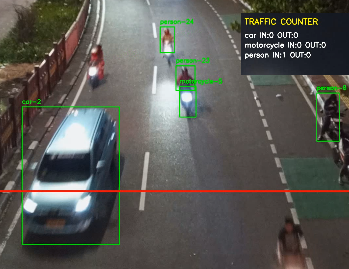
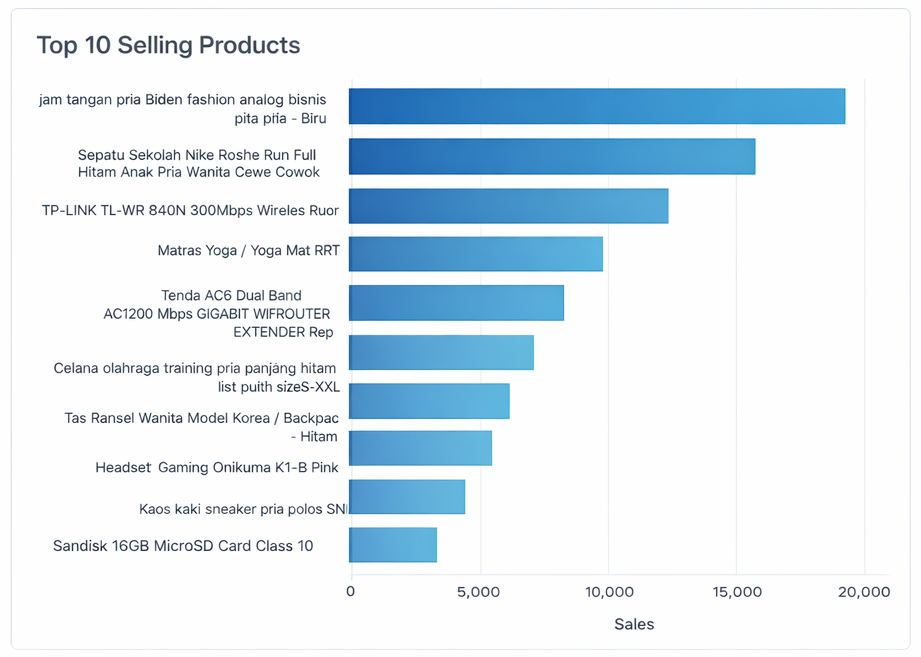
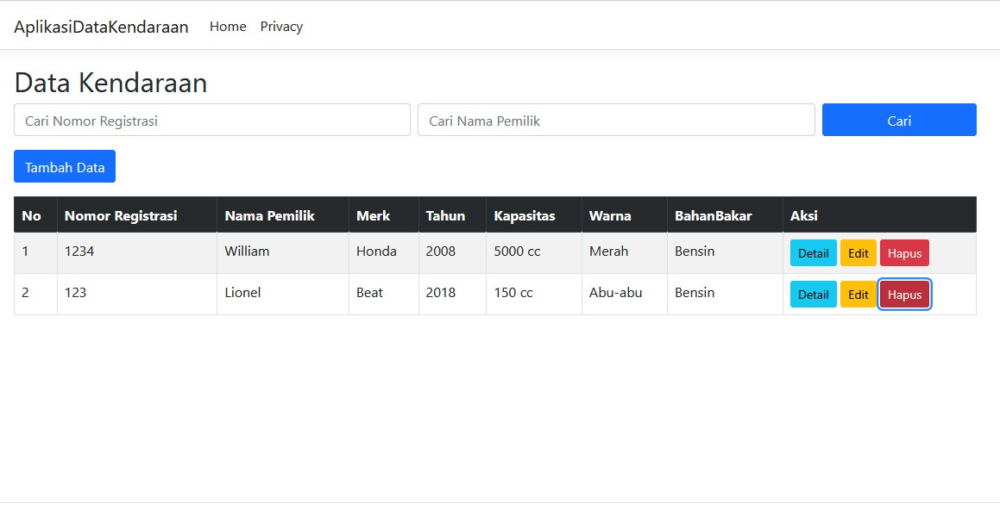
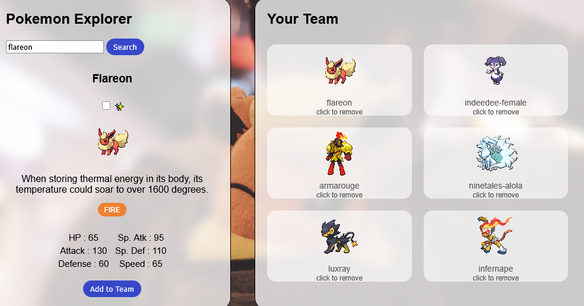
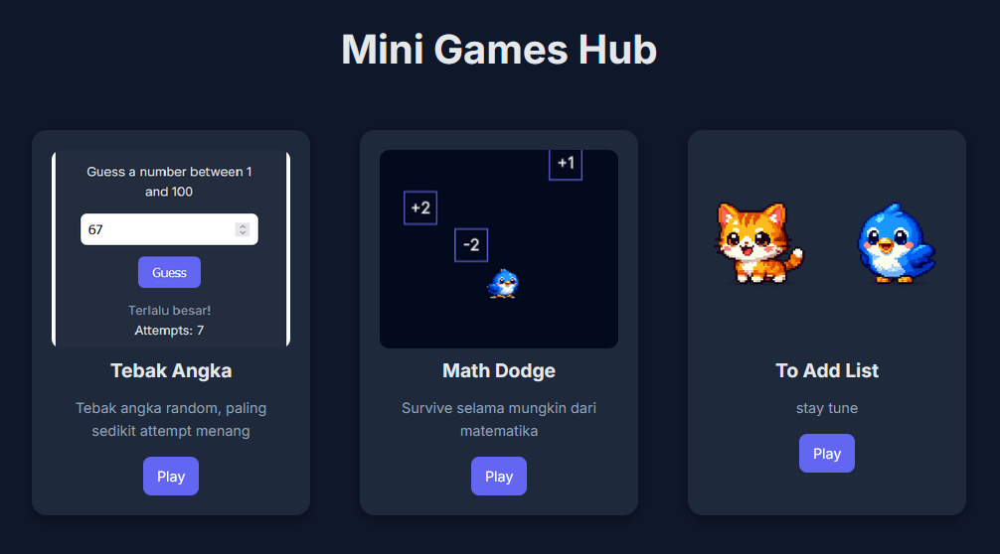

Portfolio

Automatic Traffic Monitoring System Prototype
A computer vision prototype for automated traffic monitoring using the YOLO object detection model. The system detects vehicles in video footage or by Real-time if deployed on CCTV, tracks movement, and counts vehicles that cross a defined line to generate traffic statistics. Each crossing event is logged with a timestamp and stored as a CSV dataset, along with annotated video output and event screenshots.
View on GitHub
Modular Automated E-commerce Review Data Pipeline for Business Insight
An end user data engineering workflow that extract dataset, transform it into insight, and load them into analysis-ready format, turning messy raw data into meaningful insight for business. This project helps business decision through graceful technical execution and combine it with business' needs.
View on GitHub
Web Dashboard
Dynamic, minimalistic, and modern web dashboard to manage data in a clear user-friendly format using PHP and filament to take care of the backend logic and frontend view. This project bridges system and user, making work efficient and accesible.
View on GitHub
Pokemon Trainer Page
A simple and fun static page built with html+css+js fetching data from pokeAPI to explore pokemon like a pokedex and built trainer card. And some hidden secret for those lucky.
View on GitHub Visit Here
Mini Game Hub
Lightweight game hub page showcasing simple games built using javascript. Contains few games that can run on most browser and easy to play games.
View on GitHub Visit Here